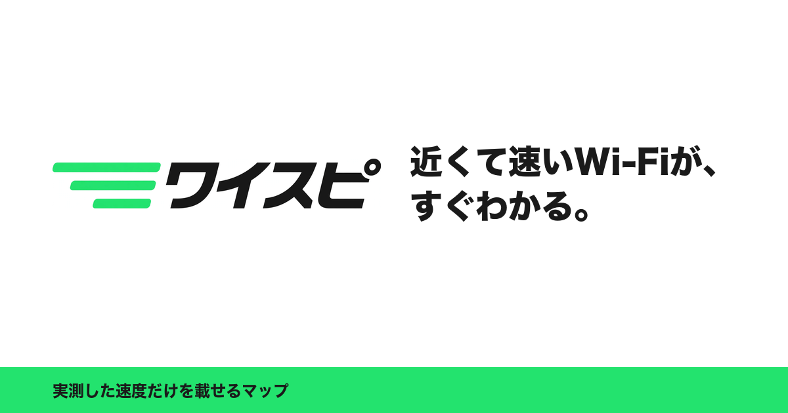
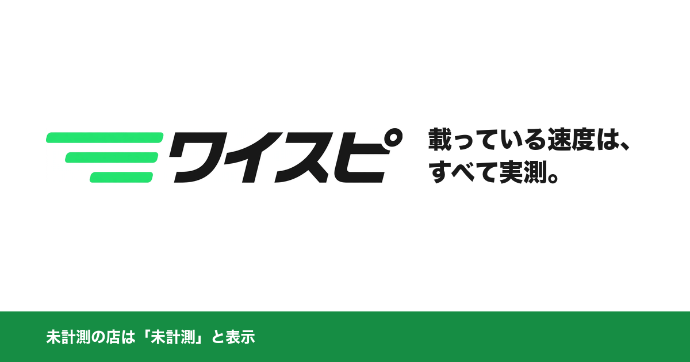
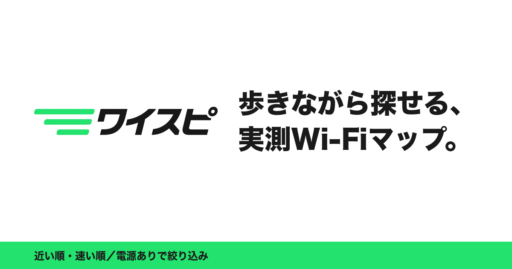
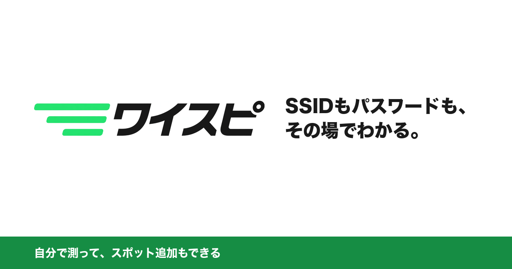
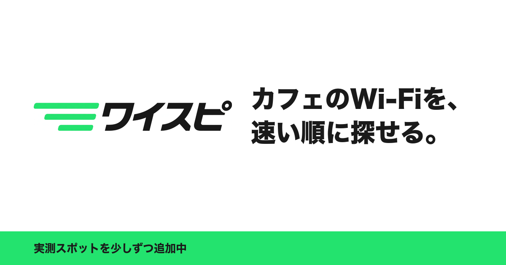

1標準

コピー：近くて速いWi-Fiが、すぐわかる。
帯：実測した速度だけを載せるマップ（緑帯・黒文字）
帯：実測した速度だけを載せるマップ（緑帯・黒文字）
2ロゴ大きめ・濃い緑帯

コピー：載っている速度は、すべて実測。
帯：未計測の店は「未計測」と表示（濃い緑帯・白文字、帯は太め）
帯：未計測の店は「未計測」と表示（濃い緑帯・白文字、帯は太め）
3コピー大きめ・細帯

コピー：歩きながら探せる、実測Wi-Fiマップ。
帯：近い順・速い順／電源ありで絞り込み（緑帯・黒文字、帯は細め）
帯：近い順・速い順／電源ありで絞り込み（緑帯・黒文字、帯は細め）
4SSID軸・濃い緑帯

コピー：SSIDもパスワードも、その場でわかる。
帯：自分で測って、スポット追加もできる（濃い緑帯・白文字）
帯：自分で測って、スポット追加もできる（濃い緑帯・白文字）
5速い順軸

コピー：カフェのWi-Fiを、速い順に探せる。
帯：実測スポットを少しずつ追加中（緑帯・黒文字）
帯：実測スポットを少しずつ追加中（緑帯・黒文字）